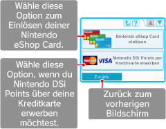

5. Erwerb von Punkten
Für den Download bestimmter Inhalte aus dem Nintendo DSi Shop benötigst du Nintendo DSi Points. Du kannst deinem Konto Nintendo DSi Points hinzufügen, indem du sie entweder per Kreditkarte erwirbst oder eine Nintendo eShop Card einlöst. Berühre im
Hauptmenü PUNKTEMENÜ, um es aufzurufen, und berühre dann die entsprechende Schaltfläche.

Hinweis:
Auch Punkte einer Wii Points Card oder einer Nintendo Points Card können als Nintendo DSi Points eingelöst werden.